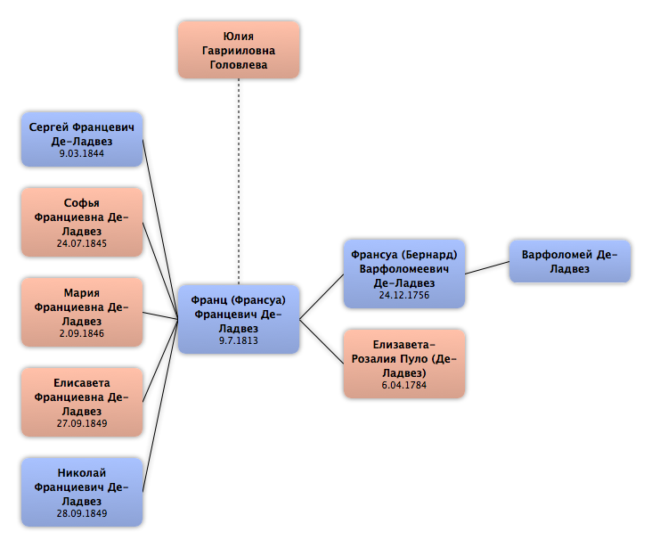

Домой
Домой
 Люди
Люди
 Семьи
Семьи
 Источники
Источники
 Диаграммы
Диаграммы
 Статистика
Статистика
Юлия Гаврииловна Головлева

Контекст

Родители
| Отец | Дата рождения | Мать | Дата рождения |
|---|
Родители и дети
 Франц (Франсуа) Францевич Де-Ладвез
Франц (Франсуа) Францевич Де-Ладвез
События
Факты
Медиа
Примечание
Источники
Родство
| Имя | Степень родства | Дата рождения | Место рождения | Дата смерти | Место смерти |
|---|---|---|---|---|---|
| Партнёров | |||||
| Муж | 9.7.1813 | ||||
| Дети | |||||
| Сын | 9.03.1844 | 23.09.1887 | |||
| Дочь | 24.07.1845 | ||||
| Дочь | 2.09.1846 | ||||
| Дочь | 27.09.1849 | ||||
| Сын | 28.09.1849 | Москва, Россия | |||
| Правнуки | |||||
| Правнук | 31.12.1895 | г. Сороки Бессарабской губернии, Россия | 27.10.1937 | Оренб. обл, СССР | |
| Правнук | 18.06.1900 | ||||
| Правнук | 16.07.1900 | ||||
| Правнук | 1901 | ||||
| Правнучка | 1905 | ||||
| Родители мужа (жены) | |||||
| Тесть / Свёкор | 24.12.1756 | Франция | 2.09.1846 | Москва, Россия | |
| Тёща / Свекровь | 6.04.1784 | 3.02.1845 | Москва, Россия | ||
| Шурины и невестки | |||||
| Шурин | 14.10.1807 | Москва, Россия | 26.06.1857 | Москва, Россия | |
| Шурин | 1812 | Москва, Россия | 1850 | Рязань, Россия | |
| Шурин | 18.09.1817 | Москва, Россия | 29.10.1854 | Санкт-Петербург, Россия | |
| Племянники и племянницы | |||||
| Муж племянницы | 2.01.1847 | Москва, Россия | |||
| Внучатые племянники и внучатые племянницы | |||||
| Жена внучатого племянника | |||||
| Жена внучатого племянника | |||||
| Муж внучатой племянницы | 23.09.1880 | ||||
| Муж внучатой племянницы | 23.2.1888 | Москва, Россия | 05.08.1929 | Москва, СССР | |
| Внуки | |||||
| Внучатая сноха | |||||
| Внук | 30.01.1870 | ||||
| Внук | 19.11.1871 | Москва, Россия | 25.04.1921 | Челябинск, Россия | |